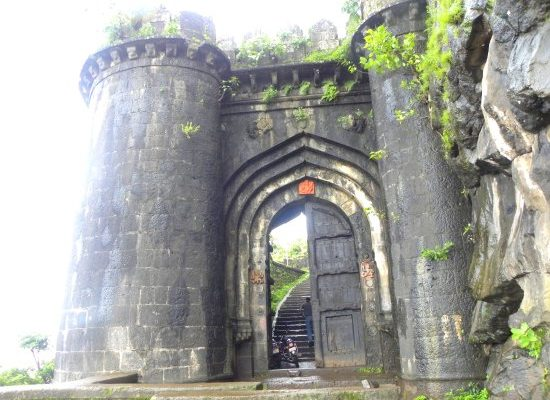
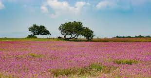
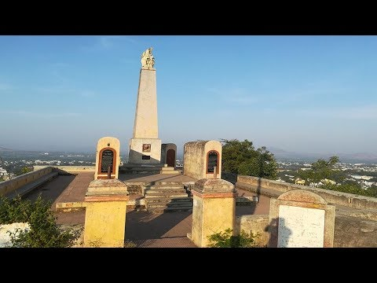

Welcome to Satara!!




About Satara
Satara is a city located in the Satara District of Maharashtra state of India, near the confluence of the river Krishna
and its tributary, the Venna. The city was established in the 16th century and was the seat of the Chhatrapati of Maratha
Empire, Shahu.
Places to visit
Satara is located at foot of the famous Ajinkyatara fort. It is located on Kas plateau / Flower plateau, now a World Natural
Heritage site.[33] Satara has two palaces in the heart of the city, the Old Palace (Juna Rajwada) and the New Palace (Nava Rajwada)
adjoining each other. The Old Palace was built around 300 years ago, and the New Palace was built about 200 years ago.
Satara has a unique statue of Shivaji standing near a canon, at Powai Naka. Generally, a statue of Shivaji Maharaj has seen him
riding the horse.[citation needed] Thoseghar Waterfalls around 20 km west of Satara. It is one of the best monsoon tourist places
in the Western Ghats. People come from all over Maharashtra to visit the falls, especially during the monsoon season between July
and October. Vajrai Waterfall, India's highest waterfall, is around 22 km from Satara. And Sajjangad, around 15 km from Satara.
Satara hosts 'Satara Half Hill Marathon' each year.[35] In 2015, they entered the Guinness World Records book for Most People in a
Mountain Run (Single Mountain) with 2,618 runners.[36][37]
Apshinge Military is a small village in Satara district but it has historical significance as at least one member of every
family in the village has served or is serving in the armed forces. The contribution of the village was recognized by the
British government, which installed a memorial in the village in the memory of 46 soldiers who laid down their lives fighting
for Britain during World War I.[38] Food
Satara is well known for its sweet: Kandi Pedhe.[citation needed]Kandi Pedhe is a special delicacy of Milk which is prepared by
pure full-fat milk available in nearby villages. It has its natural richness and sweetness. Kandi pedha has its unique test and
is not sugar loaded like other pedhas available in the market.